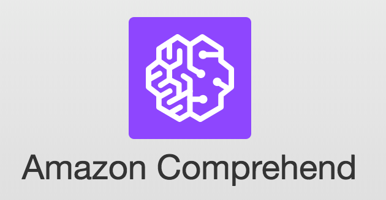
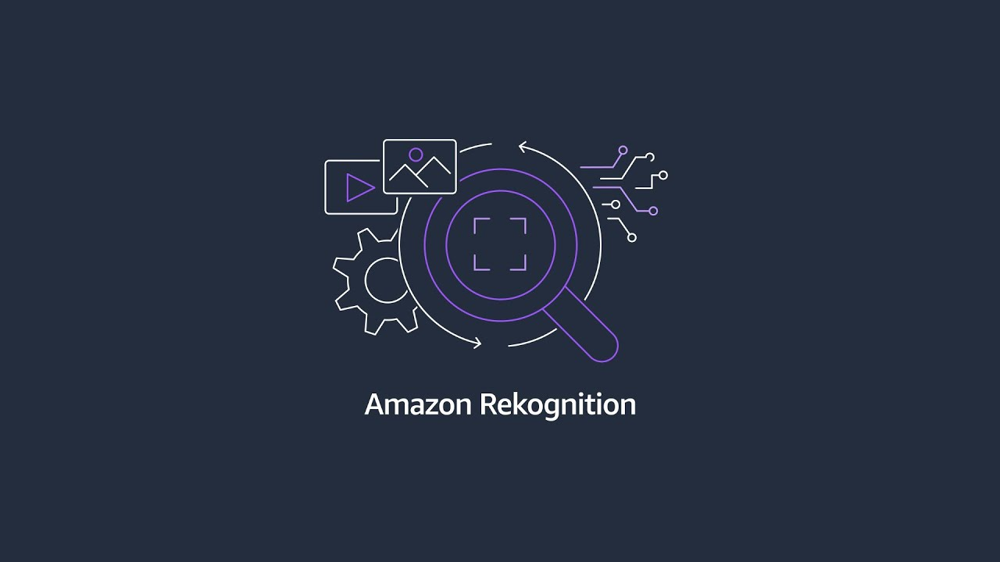
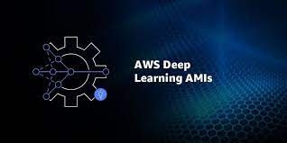

AWS SERVICES
Amazon Web Services (AWS) offers a comprehensive suite of AI and ML services that empower organizations to harness the power of artificial intelligence and machine learning. These services are designed to cater to a wide range of use cases and skill levels, from data scientists and machine learning experts to developers and business users. AWSSERVICES.
-
AWS Sagemaker
AWS SageMaker is a comprehensive machine learning service for model development, training, and deployment, simplifying the end-to-end ML process.
-
AWS Glue for Data Preparation
AWS Glue is a managed ETL (Extract, Transform, Load) service that automates the preparation and transformation of data. It makes data integration and data cleaning easier for machine learning projects.
-

AWS COMPREHEND
Amazon Comprehend offers natural language processing capabilities to extract insights and relationships from text data. It can detect sentiment, entities, key phrases, and more.
-

AWS Rekognition
Rekognition is an image and video analysis service. It can detect objects, people, text, and even emotions in images and videos.
-
AWS POLLY
Amazon Polly is a text-to-speech service that can convert text into natural-sounding speech. It supports multiple languages and lifelike voices.
-
Amazon Lex
Lex is a service for building chatbots and conversational interfaces. It includes speech recognition and natural language understanding capabilities.
-
Amazon Translate
Amazon Translate provides language translation capabilities. It supports a wide range of languages and can be used for real-time translation of text.
-

AWS Deep Learning AMIs
AWS offers pre-configured Amazon Machine Images (AMIs) optimized for deep learning frameworks like TensorFlow and PyTorch. These AMIs make it easy to set up deep learning environments.
-

Amazon Personalize
Amazon Personalize is a service for building personalized recommendation systems. It uses ML algorithms to create customized recommendations for users.